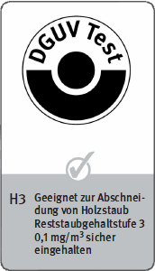

Stäube von vielen Laubhölzern können Krebs-, Haut-, Atemwegserkrankungen und allergische Reaktionen verursachen.
Zusammen mit Luftsauerstoff bilden sie brennbare oder explosionsfähige Gemische.
Allgemeines
Holzstäube treten bei allen spanabhebenden Verfahren, z. B. an Holzbearbeitungsmaschinen, Handmaschinen und Handschleifarbeitsplätzen auf.
Weiterhin muss beim Reinigen von Arbeitsstätten und Arbeitsmitteln sowie bei Wartungsarbeiten und Tätigkeiten zur Störungsbeseitigung (z. B. in Filteranlagen und Silos) mit dem Freiwerden von Holzstaub in die Atemluft gerechnet werden.
Schutzmaßnahmen
Absaugung grundsätzlich notwendig bei allen spanabhebenden Bearbeitungsverfahren, z. B. an Holzbearbeitungsmaschinen, Handmaschinen und Handschleif-Arbeitsplätzen, wenn nicht in der Gefährdungsbeurteilung eine geringe Exposition festgestellt wird.
Ausnahmen:
für Ständerbohrmaschinen bei Verwendung üblicher Spiralbohrer (bei Verwendung von Topfbandbohrern ist jedoch eine Absaugung erforderlich),
für Maschinen, die im Freien oder in teilweise offenen Räumen, Werkhallen betrieben werden (z. B. Baustellenkreissägen, Motorkettensägen, mobile Sägen, Zimmereihandmaschinen),
für Furnierkreissägen, Astlochfräsen, Kettenstemmmaschinen, Langloch-, Dübel- und Reihenbohrmaschinen wegen der sehr geringen Zerspanungsleistung,
für Ausleger- und Gehrungskappkreissägen, Tischbandsägen, Tischoberfräsen, Montagekreissägen bei geringen Maschinenlaufzeiten bis maximal eine Stunde pro Schicht.
Beim Anschluss mehrerer Maschinen an einen Absaugstrang Schieber an jedem Absaugstutzen einbauen. Schieber müssen automatisch öffnen und schließen, wenn die jeweilige Maschine ein- bzw. ausgeschaltet wird. Ausnahme hiervon gilt für Anlagen, die vor 1993 in Betrieb genommen worden sind, soweit sie mit Handschiebern ausgerüstet sind oder wenn der Absaugvolumenstrom von Maschinen so gering ist, dass er den Gesamtvolumenstrom nicht wesentlich beeinflusst.
Für regelmäßige Handschleifarbeiten Tische mit Absaugung verwenden, sofern nicht ausschließlich mit abgesaugten Schleifpads gearbeitet wird.
Fußbodenschleifmaschinen müssen mit einer geprüften Absaugung ausgerüstet sein oder an einen Entstauber angeschlossen werden können. Betriebsanleitung beachten.
Handmaschinen an geprüfte Entstauber der Staubklasse M (oder H) anschließen.
Ortsveränderliche Entstauber, die die Luft in den Arbeitsbereich zurückführen, müssen nach DIN EN 60335-2-69 mit Staubklasse M oder dem Prüfzeichen des Fachausschusses "Holz" mit der Zusatzbezeichnung H3 gekennzeichnet sein.
Wirksamkeit der Absaugungen und Absauganlagen durch Arbeitsbereichsanalyse überprüfen. Für Holzstaub gilt ein Expositionsgrenzwert von 2 mg/m³, gemessen als einatembarer Staub.
Reinigung grundsätzlich durch Aufsaugen, z. B. durch geprüfte Staubsauger der Staubklasse M (oder H). Ausnahme bei Kombination aus Absaugen und Abblasen möglich, z. B. bei Maschinen, die mit Vakuumspannelementen ausgerüstet sind.
Bei eingeschalteter Absaugung vom Beschäftigten weg in die Erfassungselemente blasen.
Verschmutzte Arbeitskleidung absaugen und nicht abblasen.
Messung der Luftgeschwindigkeiten an den Absauganschlüssen vor der ersten Inbetriebnahme und nach wesentlichen Änderungen.
Prüfen von Absaug-, Aufsaug- und Abscheideeinrichtungen einmal täglich auf offensichtliche Mängel, einmal monatlich auf Funktionsfähigkeit, z. B. durch Kontrolle der
Erfassungselemente auf Beschädigung,
der Förderleitungen und Filter auf Beschädigungen und Verstopfungen,
der Abreinigungs- und Austragseinrichtungen auf Funktion.
Prüfung auf Funktionsfähigkeit einmal jährlich dokumentieren.
Gehörschutz verwenden.
In Arbeitsbereichen mit hoher Staubbelastung Atemschutzgeräte mindestens mit Partikelfiltern P2 bzw. für kurzzeitige, gelegentliche Tätigkeiten filtrierende Masken FFP2 benutzen. Tragezeitbegrenzung beachten.

Arbeitsmedizinische Vorsorge
Arbeitsmedizinische Vorsorge nach Ergebnis der Gefährdungsbeurteilung veranlassen (Pflichtvorsorge) oder anbieten (Angebotsvorsorge). Hierzu Beratung durch den Betriebsarzt.